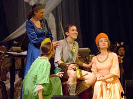
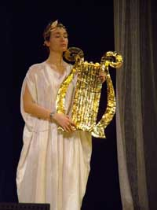

|  | Комическая опера В. Мартин-и-Солера по сказке Екатерины II Эхъ... Осьмнадцатый векъ... Россия... Арзамас…Полетела синица море зажигать, море не зажгла, а шуму наделала… Хор "Оставя хлопоты, работы" Хор "Горебогатырь Вас молит." Квартет Горебогатыря, Кривомозга, Торопа и Громкобая с хором "Ступай, поедем, братцы" Песня Земфиры «Хочешь» (фрагмент) Хор "Лишь в дверях, лишь в дверях приметим" Дуэт Гремилы и Горебогатыря "Мне рыцарски дела приятны" Хор "Пословица сбылась" |
Сеньор Шерстенотти пытается объясниться намеками, но его не понимают… Дж. Верди. Ария Герцога из оперы «Риголетто» |
|  | или Два взгляда на одну любовную историю” Спектакль по операм К.В. Глюка и Ж. Оффенбаха Орфей прощается с умершей Эвридикой, но Амур предлагает посмотреть на эту историю с другой стороны, т.е. несерьезно... Общественное мнение заставляет Орфея начать поиски Эвридики, которую похитил Плутон. Юпитер предлагает Эвридике убежать с ним на Олимп. Эвридика же останавливает свой выбор совсем на другом… Хор «Как грустно ветер мирт колышет» из оперы К.В. Глюка «Орфей и Эвридика» Ария Орфея «Потерял я Эвридику» из оперы К.В. Глюка «Орфей и Эвридика» Рондо Купидона с хором из оперы Ж. Оффенбаха «Орфей в аду» Финал на Олимпе с Юпитером, Плутоном, Орфеем и Общественным Мнением из оперы Ж. Оффенбаха «Орфей в аду» Гимн Бахусу «Как этот сок хмельной» из оперы Ж. Оффенбаха «Орфей в аду» Адский галоп «В аду бал оригинален» из оперы Ж. Оффенбаха «Орфей в аду» |
С гор спускаются шотландцы с флейтами, гитарой, скрипкой, губной гармошкой, перкуссией и бойраном (ансамбли «Lads-n-Ladies» п/р К. Пополовой и «Танцмиссия» п/р С. Казимирчук) Шотландская песня на стихи Р. Бернса «Ye, Jacobites by name»
| |
 |
Старик Кассандр, являясь опекуном Изабеллы, не прочь приударить за ней. Изабелла, хотя и любит Леандра, который надолго куда-то уехал, по совету своей камеристки Коломбины соглашается стать женой Кассандра. Кассандр же, чтобы узнать подлинные намерения Изабеллы, решает спрятаться в доме. Тут внезапно возвращается Леандр со своим слугой Пьеро. Самое лучшее, где можно подслушать разговоры двух пар, – это заменить собой свой же портрет в картине. И когда нерешительная Изабелла репетирует свою речь перед картиной, портрет внезапно отвечает… Увертюра с хором «Вот картина, разве не прекрасна» Ариетта Изабеллы «Молода я и красива» Ариетта Коломбины «Иной сеньор седой» Ариетта Кассандра «О, как речь твоя меня окрылила» Трио Кассандра, Изабеллы и Коломбины «Мой долг быть там» Ариетта Коломбины «Что прошло, того не воротить» Дуэт Леандра и Изабеллы «Я вдали страдал вместе с вами» Квинтет Кассандра, Изабеллы, Леандра, Коломбины и Пьеро «Какой пассаж» Водевиль с хором «Весь мир ликуя славит Любовь, что нами правит» |
Представление для кавалеров, дам и простой публики на музыку оратории “Мессия” и др. сочинений Г.Ф. Генделя Гендель и его антрепренер постоянно борются с зазнавшимися певцами. Гендель вспоминает забытого всеми кантора из Германии И.С. Баха Ария Созарма из оперы “Созарм” Дуэт и хор “Break forth into joy” из оратории “Мессия” Хор “Hallelujah” из оратории “Мессия” |
Тихая и незаметная уборщица на юбилейном представлении оказывается основательницей Театра, певшей в нем все 25 лет. Дж. Россини. Ария Арзаче из оперы «Семирамида» |
Музыкальная мистерия по кантате К. Орфа Ваганты в таверне рассказывают жителям Ангулема о новостях в Европе. Главная ведьма Вальпургия созывает всех на шабаш. Отец Урбан осуждает ведьм. Хор “Здесь в таверне все мы пьяны” Сцена “Шабаш” (“Reie”, “Swaz hie gat umbe”, “Chume, chum geselle min”) Хор “О, Фортуна” |
Комическая опера Дж. Россини “Золушка” Секстет и хор “Оглянуться не успели – 25 лет пролетели” |
{kind=link}
{kind=link}
Фотографии Аудио запись спектакля
Вверх